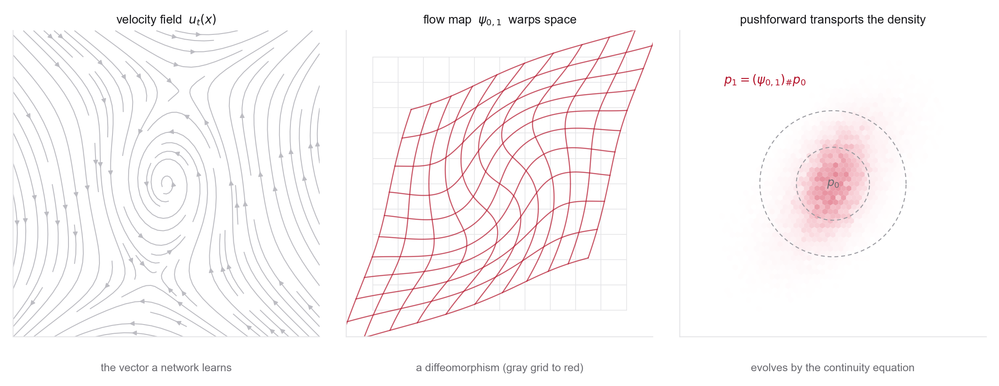

1Orientation
Generation as sampling, ODE flows, flow maps, the continuity equation, continuous normalizing flows, and why geometry matters once the objects are molecules and materials.

Almost every model in this course shares a single skeleton. Pick a distribution you can already sample from, usually a standard Gaussian, and learn a time-dependent transformation that carries it onto the data distribution. Diffusion, flow matching, stochastic interpolants, and Schrodinger bridges all vary the same move. They differ in the path taken between the two distributions, in whether that path is deterministic or noisy, and in the objective used to learn it. Week 1 studies the cleanest instance of the skeleton, a deterministic flow defined by an ordinary differential equation, with none of the stochasticity or large-scale machinery layered on yet. Working through this case first is what makes the later papers easy to follow.
Three objects carry the week, and you should be able to move between them comfortably by the end. The velocity field \(u_t(x)\) gives a vector at every point and time, and it is the object a neural network eventually learns. Its time integral is the flow map \(\psi_{s,t}\), a smooth, invertible warp of space (a diffeomorphism) that says where each point ends up. As the flow carries points, it also carries probability mass. The pushforward of the base distribution evolves by the continuity equation, the same conservation law that governs a compressible fluid. Two of the course's organizing questions get their first answers here. The dynamics being learned are a velocity field, and the state space, simple for now, turns nontrivial in the second half of the week.
This is why chemistry and materials enter in week one rather than later. A generic vector in \(\mathbb R^d\) hides the choices baked into a scientific representation, including atom ordering, the coordinate frame, which transformations leave a molecule physically unchanged, and the periodicity of a crystal lattice. A faithful generative model has to respect translation, rotation, and permutation symmetry, and treat a periodic cell as periodic. Meeting that requirement now, while the math is still just flows on \(\mathbb R^2\), motivates the equivariant networks, fractional coordinates, and lattice variables that dominate the second half of the course.
This week is deliberately pre-diffusion. The goal is to make vector fields, flows, pushforwards, and density evolution concrete before stochasticity, score functions, and denoising objectives arrive in Week 2. By the end, the continuity equation and the change-of-variables identity should feel routine. The rest of the course assumes them.
2Learning goals
- Translate “generate a molecule/material” into sampling from a target probability distribution.
- Define a time-dependent vector field, its flow map, and the induced pushforward of a distribution.
- Derive the continuity equation and the instantaneous change-of-variables formula for CNFs.
- Recognize where exact likelihood, invertibility, and geometric constraints help or hurt in chemistry/materials applications.
3Methods readings
Read in order, these four papers trace one idea, turning a simple distribution into data by transport, from its origin to the form the rest of the course relies on. Normalizing flows learn an exact density by composing invertible maps. Neural ODEs replace that discrete stack with a continuous-depth differential equation, which is the flow you study this week. FFJORD makes the continuous version scale. The stochastic-interpolant paper then trades maximum likelihood for simple regression, the basis of flow matching and what follows it. The MIT notes fix the notation and tie the four together. Aim to reproduce the central derivations and place each framework on this arc, rather than to memorize every result. The lecture notes distill all of this into one place, with figures and a companion notebook.
The single source of notation for the course. Section 1 builds generation as sampling from a data distribution. Section 2.1 defines flow models, the flow as a diffeomorphism that warps space, Euler and Heun simulation, and the neural velocity field. Stop before Section 2.2, since diffusion is next week. Aim to state exactly what a flow model is and how you draw a sample from one.
The paper that made normalizing flows standard. Its bargain is the one to remember. Compose invertible maps, track the log-determinant of each Jacobian, and you get exact likelihoods, at the price of architectures engineered to keep that determinant cheap. Every later question about avoiding that Jacobian, including this week's, starts here.
The conceptual turn of the week. A deep residual network becomes a continuous-depth ODE in the limit of infinitely many small steps, so the flow map you solve by hand in Problem 2 is the same object the network integrates. Depth becomes a continuous time variable rather than a layer count. Also introduces the adjoint method for differentiating through a solver.
How continuous flows became practical. Tracking the exact log-density along a trajectory needs the divergence of the velocity field, the trace of its Jacobian, which is costly in high dimensions. FFJORD estimates it with the Hutchinson trace estimator you prove in Problem 3. Read it for the engineering that turns a clean identity into something trainable, and for why it lifts the architectural constraints earlier flows depended on.
A preview of the approach later weeks adopt. Rather than maximize likelihood by backpropagating through an ODE solver, define a path that connects base and data in finite time and regress the velocity directly against it with a simple quadratic loss. Problem 5 is a hands-on first taste. Flow matching (Week 3) and stochastic interpolants (Week 4) are the full theory.
4Chemistry / materials application readings
These readings test the clean theory against real scientific representations. Boltzmann Generators apply invertible flows to a genuine physics problem, sampling equilibrium states of a molecular system and estimating free energies. GraphAF adapts flow ideas to molecular graphs, where discrete bonds and valence rules sit awkwardly inside a continuous invertible model. E(n) Equivariant Normalizing Flows points ahead to the geometry-aware generators of Week 10. Carry one question through all three. Where does an exact, invertible flow on a vector help, and where does the structure of the object get in the way?
Invertible flows applied to equilibrium sampling and free-energy estimation, a high-impact result in the physical sciences.
One representative of flow-based molecular graph generation. Worth reading for how discrete bonds and valence rules are forced to coexist with a continuous invertible model, and why generating atoms one at a time with validity checks turns out to help.
Optional bridge toward equivariant 3D generative models.
5Problems
Six compact problems. Three derivation and concept checks, then three coding labs, each on its own page with full statements.
- Data distributions, representations, and physical symmetriesconceptual + derivation
- Analytic flow maps and the continuity equationderivation
- Change of variables and continuous log-likelihoodsderivation + sketch
- Coding lab: build a probability-flow sandboxcoding
- Coding lab: learn a vector field from Gaussian to two moonscoding + flow matching
- Coding lab: symmetry and periodicity sanity checkscoding + geometry
Discussion prompts
- What do exact likelihood and invertibility buy us, and where do they become awkward for molecular graphs or periodic crystals?
- In a ChE / statistical mechanics language, what is the analogy between a learned transport map and a coordinate transformation for sampling?
- How should we treat symmetries, whether by architecture, data augmentation, constraints, or postprocessing?
6Connection to the next module
Most of this week survives into the next one. The transport skeleton, the velocity field, the continuity equation, and step-by-step simulation all carry over unchanged. Week 2 keeps the differential-equation view and adds one ingredient, stochasticity. A Brownian forward process now noises the data, and the model learns to reverse it.
What gets replaced is the workhorse. This week's engine is exact likelihood through invertible maps, which Problem 1 already shows is fragile, since the empirical data distribution has no usable gradient. The fix introduced there, smoothing the empirical measure with a Gaussian and reading off its score, carries directly into Week 2. That smoothed score is the denoising score matching target, and learning it avoids the likelihood machinery entirely. Problem 2's time-reversal identity returns as well. Reversing a deterministic flow only flips the sign of the velocity, but reversing a stochastic process needs a correction term, and that term is exactly the score just described. Both points are set up deliberately this week so that Week 2 can build on them directly.